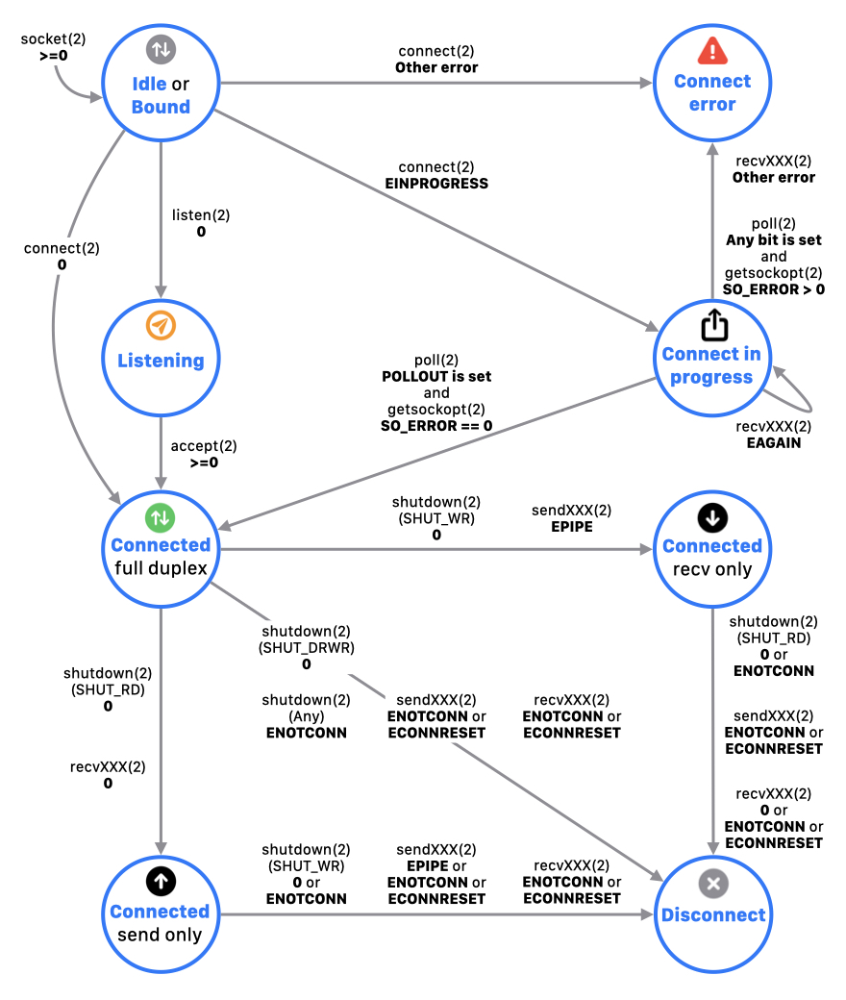

第1章 Socket Simulator
SOCTEST - USER'S GUIDE
本章では、ソケットシミュレーター（本アプリ）の初期画面（以降、トップ画面）の機能について説明します。
トップ画面では、ソケットの作成、削除、状態確認、および一覧表示を行います。
ソケットの作成
socket をタップし、次の画面でプロトコルファミリー・ソケットタイプ・プロトコルを選択します。socket(2) を発行して新しいソケットを作成します。
作成したソケットは画面に一覧表示されます。
[補足]
ソケット作成数の上限は設けていません。
ソケットの削除
ソケット行を左にスワイプすることで当該ソケットに対して close(2) を発行し、一覧から削除します。
ソケットの状態確認（polling）
画面を下に引っ張ることで全てのソケットの状態を polling します。
この polling は、POLLIN|POLLPRI|POLLOUT を監視対象としてタイムアウト 0 秒で poll(2) を発行します。
ソケットの一覧表示
一覧表示におけるソケットの情報や状態の見方を示します。
アイコン
ソケットの状態に応じて変化します。
| アイコン表示 | 説明 |
|---|
| 役割 | | サーバーソケット
listen(2) を発行して接続待ちのリスニングソケット。または、accept(2) を発行して生成したソケットを指す。 |
 | クライアントソケット
上記以外 |
I/O
モード
(*1) |  | 非停止（以降、non-blocking）モード
fcntl(2) を発行してファイル状態フラグに O_NONBLOCK をセットしている状態。 |
 | 停止（以降、blocking）モード
上記以外 |
接続
状態
(*2) | | 未接続状態
初期状態。または bind(2) を発行してアドレスが割り当て済みの状態。 |
 | リスニング中
listen(2) を発行して接続待ち。
|
 | 接続処理中
non-blocking ソケットに対する接続処理の完了待ち。 |
 | 接続エラー状態
ソケットの接続処理でエラーが発生した。 |
| 接続済み状態（全二重接続状態）
ソケットに対する接続処理が正常完了した。または、accept(2) を発行してソケットを生成した。 |
| 接続済み状態
全二重の受信側が閉じている状態。 |
| 接続済み状態
全二重の送信側が閉じている状態。 |
| 切断状態
全二重の全てが閉じている状態。 |
*1 I/O モードのアイコンは、アプリの設定 DESCRIPTION が有効な場合に表示されます。
*2 接続状態のアイコンは、アプリの設定 AUTO MONITORING が有効な場合に、SOCK_STREAM ソケットで表示されます。
ソケットアドレス（上段）
アドレスが割り当て済みの場合に Src Address と表示されます。
ただし、リスニング中のソケットを除きます。
Address には、IP アドレスとポート番号（PF_INET の場合）または UNIX ドメインパス（PF_UNIX の場合）が表示されます。
ソケット表示名
ソケットの状態に応じて以下のように表示されます。
| 表示名 | 状態 |
|---|
| INET domain socket | AF_INET ソケット（初期表示） |
| UNIX domain socket | AF_UNIX ソケット（初期表示） |
| Dst Address | ソケットが接続済み。 |
| Src Address | ソケットがリスニング中。
または、SOCK_DGRAM ソケットにアドレスが割り当て済み。 |
ソケットパラメータ（下段１）
ソケットの情報が表示されます。
アプリの設定 DESCRIPTION が有効な場合に表示されます。
- ファイルディスクリプター番号
- プロトコルファミリー
- ソケットタイプ
- プロトコル（デフォルトの 0 以外を指定した場合）
ソケット接続状態（下段２）
ソケットの接続状態が表示されます。接続状態は、上述のアイコンと連動します。
アプリの設定 AUTO MONITORING が有効な場合に、SOCK_STREAM ソケットで表示されます。
| 接続状態 | Icon | 説明 |
|---|
| Idle | | 初期状態 |
| Bound | アドレスが割り当て済み |
| Listening | | リスニング中 |
| Connect in progress | | 接続処理中 |
| Connect error | | 接続エラー状態
付加情報としてエラー値が表示されます。
Err#<errno 番号> <errno 名> |
| Connected | | 接続済み状態 |
|
|
| Disconnect | | 切断状態 |
ソケットの接続状態は、以下のとおり遷移します。

TCP ステータス（下段３）
ソケットに紐づいている TCP コネクションのステータスが表示されます。
アプリの設定 AUTO MONITORING が有効な場合に、TCP ソケット（SOCK_STREAM タイプの AF_INET ソケット）で表示されます。
このステータスは、TCP_CONNECTION_INFO オプションで取得できるパラメータ tcpi_state の値をもとに表示されます。
ステータスの詳細は、RFC#793 やインターネット公開サイトの情報を参考にしてください。
| tcpi_state | ステータス |
|---|
| 0 | CLOSED |
| 1 | LISTEN |
| 2 | SYN_SENT |
| 3 | SYN_RECEIVED |
| 4 | ESTABLISHED |
| 5 | CLOSE_WAIT |
| 6 | FIN_WAIT_1 |
| 7 | CLOSING |
| 8 | LAST_ACK |
| 9 | FIN_WAIT_2 |
| 10 | TIME_WAIT |
TCP トラフィック量（下段４〜６）
TCP コネクションを使用したパケット転送処理における送受信トラフィック量が表示されます。
アプリの設定 AUTO MONITORING が有効な場合に、ステータスが CLOSED、LISTEN 以外の TCP ソケットで表示されます。
この情報は、TCP_CONNECTION_INFO オプションで取得できるパラメータの値が表示されます。
| 表示項目 | パラメータ | 説明 |
|---|
| RX | tcpi_rxbytes
tcpi_rxpackets | 受信したデータ量（バイト単位 / パケット数単位） |
| TX | tcpi_txbytes
tcpi_txpackets | 送信したデータ量（バイト単位 / パケット数単位） |
| Retransmit | tcpi_txretransmitbytes
tcpi_txretransmitpackets | 再送したデータ量（バイト単位 / パケット数単位） |
TCP RTT（下段７）
TCP 通信における RTT（ラウンドトリップ時間）が表示されます（精度: ミリ秒）。
アプリの設定 AUTO MONITORING が有効な場合に、ステータスが CLOSED、LISTEN 以外の TCP ソケットで表示されます。
この情報は、TCP_CONNECTION_INFO オプションで取得できるパラメータの値が表示されます。
| 表示項目 | パラメータ | 説明 |
|---|
| Average RTT | tcpi_srtt | RTT の平均値（秒単位） |
| Recent RTT | tcpi_rttcur | RTT の直近値（秒単位） |
イベントビットマスク（下段８）
polling でチェックしたイベントのビットマスクが表示されます。イベントが設定されている場合は、該当するイベントビットが強調表示されます。
着信データ・エラー発生の有無や非同期処理の終了判定を確認するために利用します。
以下に示す 3 通りの polling の結果が表示されます。
Copyright © 2021 manabapp. All rights reserved.
English | 日本語